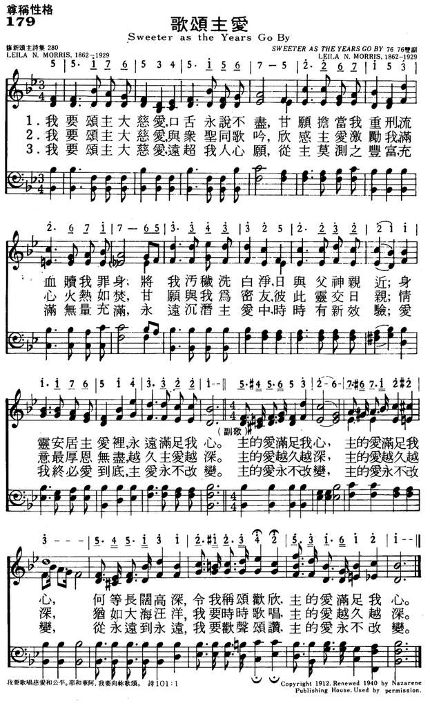

|
|
|
|
1 Of Jesus’ love that sought me Refrain: 2 He trod in old Judea 3 ’Twas wondrous love which led Him |
179歌颂主爱
1.我要颂主大慈爱，口舌永说不尽，
甘愿担当我重刑，流血赎我罪身， 将我污秽洗白净，日与父神亲近； 身灵安居主爱里，永远满足我心。 主的爱满足我心，主的爱满足我心， 何等长阔高深，令我称颂欢欣， 主的爱满足我心。 2.我要颂主大慈爱，与众圣同歌吟， 欣感主爱激励我，满心火热如焚， 甘愿与我为密友，彼此灵交日亲； 情意最厚恩无尽，越久主爱越深。 主的爱越久越深，主的爱越久越深， 犹如大海汪洋，我要时时歌唱， 主的爱越久越深。 3.我要颂主大慈爱，远超我人心愿， 从主莫测之丰富，充满无量充满， 永远沉潜主爱中，时时有新效验； 爱我终必爱到底，主爱永不改变。 主的爱永不改变，主的爱永不改变， 从永远到永远，我要欢声颂赞， 主的爱永不改变。 |
|
https://www.mred365.cn/szxg/7182.html
 https://hymnary.org/hymn/HFS1977/page/274
|
|
|
|
|


【詩歌欣賞】歌頌主愛 https://www.youtube.com/watch?v=kA5VXosCe-o -
歌頌主愛 Sweeter as the Years Go By - 第一屆聖詩頌唱會 https://www.youtube.com/watch?v=UfLfztuYB-U -
Sweeter As The Years Go By https://www.youtube.com/watch?v=vdNl30MsNgQ -
Of Jesus Love That Sought Me (Sweeter As The Years Go By) - Martha Reed Garvin https://www.youtube.com/watch?v=VaV9FreLIcg
這首「頌主大愛」係由 Lelia N. Morris (1862 - 1929)
女士作詞和譜曲。她是衛理公會的會友，在她50歲時，雖然失明，仍繼續寫作聖詩直到離世為止。
在其瞎眼期間，Morris 女士使用長達 28
英尺，上面有五線譜的黑板，以利作詩，她一生共作了一千多首聖詩。雖然遭遇身體的缺陷，心靈的眼睛卻看見主的榮耀，並體驗到主的愛真是越久越深。
我要歌頌祢的名，直到永遠，好天天還我所許的願。（詩61:8）
神有豐富的慈愛，因此聖經對神的慈愛，有諸多的述說。例如：弗 2:4「祂愛我們的大愛。」說到神的愛不是普通的，乃是大的愛。約壹 3:1
則記載「你看父賜給我們是何等的慈愛，使我們得稱為神的兒女。」這裡要我們看，要我們注意的，乃父所賜給我們的是何等的慈愛，是用「何等」的字眼來形容它。
詩篇 103:8 說：「耶和華有豐盛的慈愛。」告訴我們神的慈愛是豐盛的。以弗所書3 :18
說「基督的愛是何等長闊高深。」是用最大的字眼長、闊、高、深四個字來形容神的愛何其豐滿難測。因此接著十九節說：「這愛是過於人所能測度的。」實在是人所沒有辦法加以衡量測度的。
神的愛越久越深，我們即使滿身是口，也無法述盡，讚美主！
LX1840
Sweeter As The Years Go
By
179歌颂主爱
| Text: | Sweeter as the Years Go By |
| Author: | Lelia N. Morris, 1862-1929 |
| Tune: | [Of Jesus' love that sought me] |
| Composer: | Lelia N. Morris, 1862-1929 |
| Short Name: | Mrs. C. H. Morris |
| Full Name: | Morris, C. H., Mrs. 1862-1929 |
| Birth Year: | 1862 |
| Death Year: | 1929 |
Lelia (Mrs. C.H.) Morris (1862-1929)

was born in Pennsville, Morgan County, Ohio. When her family moved to Malta on the Muskingum River she and her sister and mother had a millinery shop in McConnelsville. She and her husband Charles H. Morris were active in the Methodist Episcopal Church and at the camp meetings in Sebring and Mt. Vernon. She wrote hymns as she did her housework. Although she became blind at age 52 she continued to write hymns on a 28-foot long blackboard that her family had built for her. She is said to have written 1000 texts and many tunes including "Sweeter as the years go by."
Mary Louise VanDyke
"SWEETER AS THE YEARS GO BY" hymnstudiesblog
"Unto Him that loved us, and washed us from our sins…be glory and dominion forever and ever" (Rev. 1.5)
INTRO.:
A song which encourages us to give glory and dominion to the Lord for what has done for us because He loved us is "Sweeter As The Years Go By" (#558 in Hymns for Worship Revised, and #476 in Sacred Selections for the Church). The text was written and the tune was composed both by Lelia Naylor (Mrs. Charles H.) Morris (1862-1929). Mrs. Morris, a member of the Methodist Church, was a prolific author of over 1,000 gospel songs, perhaps the best known of which is "Nearer, Still Nearer." Though she became blind in her early fifties, during the last fifteen years of her life she continued to produce hymns using a 28-foot long blackboard with music lines on it. "Sweeter As The Years Go By" dates from the early years of her blindness. It was copyrighted in 1912 by Charles H. Gabriel and owned by Homer Rodeheaver. The copyright was renewed in 1940 by F. M. Lunk and assigned to the Nazarene Publishing House. The stanzas were originally for soprano and alto duet, but arrangements for full four part harmony have been made by the Lillenas Publishing Company, which is associated with the Nazarene Publishing House.
Among hymnbooks published by members of the Lord’s church during the twentieth century for use in churches of Christ, the song appeared in the 1948 Christian Hymns No. 2 and the 1966 Christian Hymns No. 3 both edited by L. O. Sanderson; the 1959 Majestic Hymnal No. 2 and the 1978 Hymns of Praise both edited by Reuel Lemmons; and the 1963 Christian Hymnal edited by J. Nelson Slater. Today, it may be found in the 1971 Songs of the Church, the 1990 Songs of the Church 21st C. Ed., and the 1994 Songs of Faith and Praise all edited by Alton H. Howard; the 1978/1983 Church Gospel Songs and Hymns edited by V. E. Howard; and the 1992 Praise for the Lord edited by John P. Wiegand; in addition to Hymns for Worship, Sacred Selections, and the 2007 Sacred Songs of the Church edited by William D. Jeffcoat.
The song reminds us of what Jesus Christ has done for us because He loved us.
I. According to stanza 1, He came to this earth in love
"Of Jesus’ love that sought me When I was lost in sin;
Of wondrous love that brought me Back to the fold again;
Of heights and depths of mercy, Far deeper than the sea,
And higher than the heavens My theme shall ever be."
A. Jesus came to this earth in order to seek and save those who are lost in
sin: Lk. 19.10
B. His coming was like a shepherd who goes to find the lost sheep that he might
bring it back to the fold: Matt. 18.10-14
C. The motivating factor in all this was that we might know the height and
depth of His mercy and love: Eph. 3.18-19
II. According to stanza 2, He lived a life of goodness
"He trod in old Judea Life’s pathway long ago;
The people thronged about Him, His saving grace to know;
He healed the broken-hearted, And caused the blind to see;
And still His great heart yearneth In love for even me."
A. When Jesus trod in old Judea, the people thronged about Him because He
taught them as one having authority: Matt. 7.28-29
B. In addition, He healed the sick and made the blind to see as evidence of who
He was: Matt. 11.1-5
C. Yet, these miraculous events also demonstrated the great compassion by which
His great heart yearns for the salvation of all mankind: Matt. 9.35-38
III. According to stanza 3, He died upon the cross
"’Twas wondrous love which led Him For us to suffer loss,
To bear without a murmur The anguish of the cross;
With saints redeemed in glory Let us our voices raise,
Till heaven and earth re-echo With our Redeemer’s praise."
A. It was wondrous love that led Jesus to be willing to accomplish God’s plan
for our redemption: Jn. 3.16
B. Therefore, He was willing to bear without a murmur the anguish of the cross
because that is what it took to provide salvation from sin for mankind: Heb.
11.2
C. As those who have been washed in His blood, our voices should be raised with
the saints redeemed in glory to echo their praise for the Lamb that was slain:
Rev. 5.11-14
CONCL.:
The chorus reminds us of how much sweeter the love of Jesus is as the years go
by.
"Sweeter as the years go by, Sweeter as the years go by;
Richer, fuller, deeper, Jesus’ love is sweeter, Sweeter as the years go by."
For those who truly believe, growing older must not become a time of complaining
and self-centeredness but should mean having a greater awareness of God’s love
and His promises to us, knowing that our relationship with Him can be "Sweeter
As The Years Go By."
https://hymnstudiesblog.wordpress.com/2008/10/31/quotsweeter-as-the-years-go-byquot/
Sweeter as the Years Go By Wordwise Hymns
Words: Lelia Naylor Morris (b. Apr. 15, 1862; d. July
23, 1929)
Music: Lelia Naylor Morris
Links:
Wordwise Hymns (Lelia
Morris)
The Cyber
Hymnal
Note: Lelia Morris’s first name is sometimes mistakenly written Leila. A memorial marker, outside her home church, settles the matter. Her name was Lelia.
Mrs. Morris became blind in her early fifties. But that did not deter her from writing. During the years when she still had partial sight, her daughter set up a 28-foot blackboard, with large music staff lines, so that she could see enough to write and compose. Over the last 15 years of her life, Lelia continued to work. In spite of her physical handicap, she produced over a thousand gospel songs. As the Bible says, “The righteous shall flourish like a palm tree….They shall still bear fruit in old age” (Ps. 92:12, 14).
The Lord Jesus promised, “In the world you will have tribulation”–speaking especially, I believe, of opposition to the gospel, and to those who seek to stand for Christ (cf. Jn. 15:18-20). “But,” the Lord goes on, “be of good cheer, I have overcome the world” (Jn. 16:33). Even in physical darkness, Mrs. Naylor had a cheering personal relationship with the One who said, “I am the Light of the world” (Jn. 8:12). In her life, she displayed the joy of the Lord. Sweeter as the Years Go By was written during the early years of her blindness, yet it is a radiant testimony.
In CH-1 she confesses she was once lost in sin, as we all were, apart from a work of God (Rom. 3:23). But we’re reminded of the grace, love and mercy that redeemed and restored us, through faith in Christ (Rom. 6:23; cf. Jn. 3:16; Gal. 2:20). Her reference to the dimensions of love is reminiscent of Ephesians 3:17-19, which speaks of the “width and length and depth and height” of the love of Christ.
Of Jesus’ love that sought me, when I was lost in sin;
Of wondrous grace that brought me back to His fold again;
Of heights and depths of mercy, far deeper than the sea,
And higher than the heavens, my theme shall ever be.
Sweeter as the years go by, sweeter as the years go by,
Richer, fuller, deeper, Jesus’ love is sweeter,
Sweeter as the years go by.
With CH-2, we have a change. From expressing her personal testimony, the author turns to the record of the New Testament. The love and compassion of the Saviour are nothing new. When He walked this earth, He showed a deep concern for those with various ills, and for their spiritual need.
“Jesus went about all the cities and villages, teaching in their synagogues, preaching the gospel of the kingdom, and healing every sickness and every disease among the people. But when He saw the multitudes, He was moved with compassion for them, because they were weary and scattered, like sheep having no shepherd” (Matt. 9:35-36).
CH-3 exhorts us to join in the chorus of praise resounding from those who have gone on before us, a chorus that will echo through the countless ages of eternity. In his prophetic vision, the Apostle John hears the heavenly chorus proclaiming,
“You [Christ] were slain, and have redeemed us to God by Your blood out of every tribe and tongue and people and nation….Worthy is the Lamb who was slain to receive power and riches and wisdom, and strength and honour and glory and blessing!” (Rev. 5:9, 12).
’Twas wondrous love which led Him for us to suffer loss,
To bear without a murmur the anguish of the cross;
With saints redeemed in glory, let us our voices raise,
Till heav’n and earth re-echo with our Redeemer’s praise.
Questions:
1) Where are you in your life’s spiritual journey? Can you sing Lelia
Morris’s testimony sincerely, as your own?
2) How would you explain the gospel simply to one who asks you “a reason for the hope that is in you” (I Pet. 3:15)?
Links:
Wordwise Hymns (Lelia
Morris)
The Cyber
Hymnal
https://wordwisehymns.com/2011/06/17/sweeter-as-the-years-go-by/